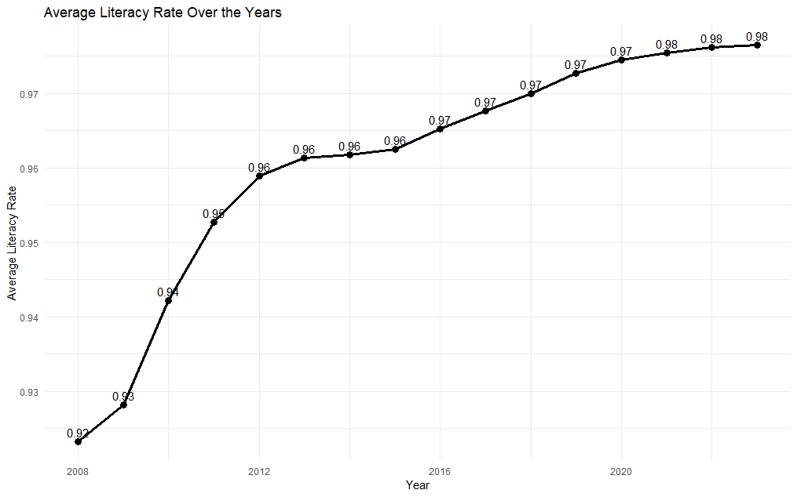
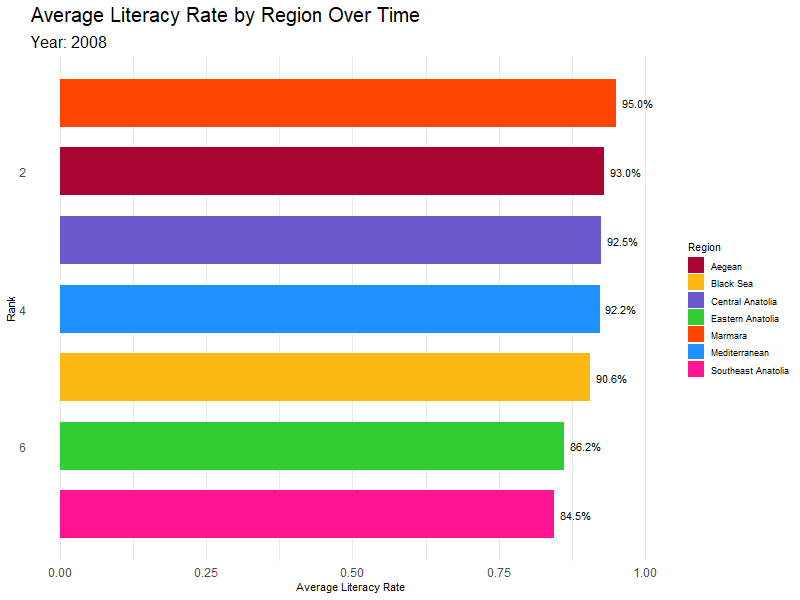
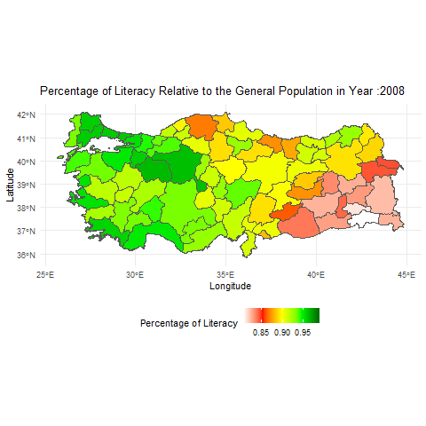
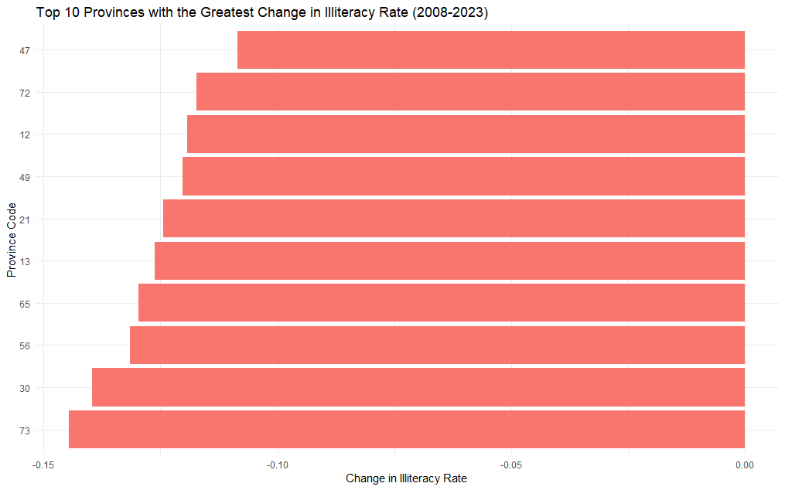
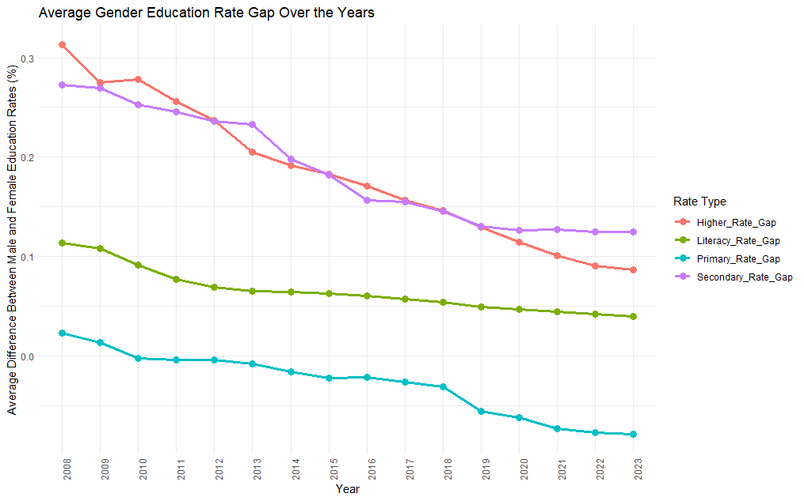

Analysis of Regional and Temporal Changes in Education Levels in Turkey
Data Overview
The data set provides information on education levels in Turkey across provinces and years, including total population and gender-specific counts. It features variables such as Year, Province Code, Province Name and Region for identification, along with detailed counts for various education levels. These levels range from Illiterate and Literate without a diploma to Primary, Secondary, and Higher Education, including Master’s and Doctorate degrees. The data also includes an Unknown category for individuals whose education levels are not specified. While the variables are primarily numerical, Province Name is character and Region is categorical.
Literacy Trends Over Time
Literacy is a key factor in a country’s development and forms the foundation of education. That’s why we place great importance on examining literacy rates in Turkey over the years. Looking at the data in Graph 1, we can see that literacy rates have improved significantly, rising from 92% in 2008 to 98% in 2023. The most noticeable increase occurred between 2008 and 2012, which raises questions about the policies and initiatives that may have driven this change.

While the overall trend shows clear progress, it’s worth taking a closer look at regional patterns to better understand how these improvements vary across different parts of the country.
Regional Patterns in Literacy Rates
This bar chart race in Graph 2, illustrates literacy rates across regions over the years. The Marmara, Aegean, and Mediterranean regions consistently rank as the top three in literacy rates, which can be grouped as western regions. Notably, starting from 2012, the Aegean region surpasses the Marmara region to take the lead. In contrast, the eastern regions tend to lag behind the western parts of the country. This gap highlights regional disparities, and exploring the underlying reasons—such as differences in infrastructure, access to education, and socioeconomic factors—could provide valuable insights for addressing these inequalities.

Now, let’s dive a little deeper.
Provincial Trends in Literacy Rates
The next graph (Graph 3), which shows literacy rates of provinces over the years, provides an even clearer picture. This visualization confirms our earlier regional analysis, as it illustrates that western provinces generally appear greener, reflecting higher literacy rates, while eastern provinces show red to yellowish-green tones, indicating relatively lower rates.

However, it’s important to note that this graph does not highlight which provinces have shown the most improvement in literacy rates over time. Just because eastern provinces appear in yellow or green shades doesn’t mean they haven’t made significant progress—they certainly have. The next graph addresses this by showcasing provinces with the highest rates of improvement in literacy over the years, offering a more dynamic view of growth and development.
Provinces with Significant Improvements
Graph 4, highlights the regions that experienced the most significant improvements in literacy rates between 2008 and 2023. The provinces showing the highest increases include Şırnak (73), Hakkari (30), Siirt (56), Van (65), and Bitlis (13)—all located in the eastern regions of Turkey. These results demonstrate substantial progress in literacy rates in areas that initially had lower levels of education, possible reflection of the positive impact of policies and initiatives aimed at improving access to education in these regions.

Gender Gaps in Literacy and Education
Now, let’s take a closer look at the gender gap in literacy rates and educational attainment. The green line on the literacy rate graph (Graph 5) shows the gender gap, where a positive value indicates that males have a higher literacy rate than females, and a negative value means the reverse. We can see that the gender gap has significantly decreased over time.

Since 2010, the female enrollment rate in primary education has increased compared to males over time. This may partially explain why the percentage of males graduating from higher education levels has grown more significantly than that of females in recent years. However, this is just one possible explanation. Other factors could include socio-cultural influences that may have previously limited female access to higher education or targeted government initiatives that promoted girls’ education in recent years.
When examining secondary and higher education, the gender gap has also narrowed, with the rates for both genders becoming more aligned over time. Interestingly, we expected that the gender gap in primary education and literacy rates would be higher than in secondary and higher education, but the opposite is true. The gap in secondary and higher education was actually larger, though it has decreased over time. This may reflect improvements in female access to secondary and tertiary education, alongside ongoing efforts to reduce educational inequalities. This could also suggest the need for more initiatives to encourage women’s participation in higher education levels.